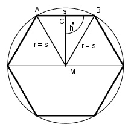

Pythagoras Aufgabe 75 Das regelmäßige Sechseck hat eine Fläche von 120 cm2. Wie lang ist eine Seite s in cm?

Das Teildreieck AMB hat eine Fläche von 120 cm³ -------- = 20 cm³ 6 Satz von Pythagoras im Dreieck MBC: MB = s s CB = --- 2 MB2 = MC2 + CB2 | -CB2 MC2 = h2 = MB2 - CB2 s h2 = s2 - (---)2 2 s2 h2 = s2 - ---- 4 3 h2 = --- s2 |√ 4 h = 0,867 * s s * h A = ------- 2 s * 0,867 * s 20 = --------------- 2 20 = 0,433 * s2 | : 0,433 46,2 = s2 |√ s = 6,8 cm